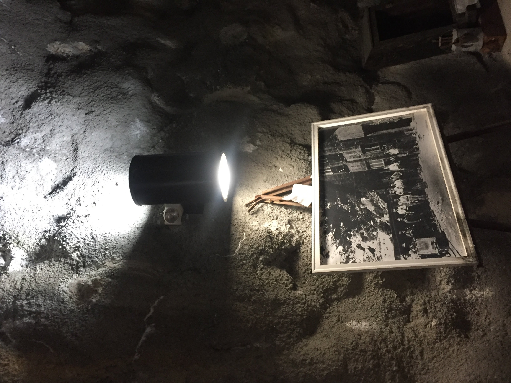
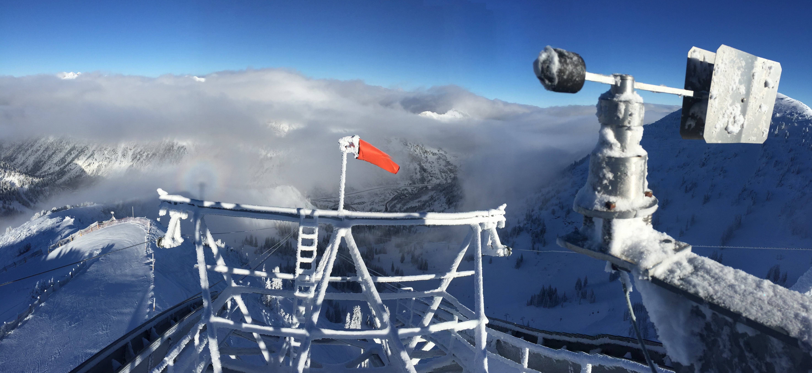

Hands On work
I have extensive electrical, mechanical experience. I also have emergency medical, rope
rescue and confined space training. Below are some examples of my work.
(Photos: taken by,
or of me).

25KV to 480KV Transformer Build
I built this new transformer from ground up. This includes:
1. Isolating the 25,000V source.
2. Pouring the concrete pad.
3. Running the 1/0 AWG stranded cable.
4. Landing the transformer.
5. Wiring the transformer to step down the 25KV to 480V.
6. Finaly, reenergizing the isolated section to confirm operation and phase.
480V Disconnect
This is a 480V disconnect that I built to isolate a snowmaking
system
from the source. This enables safe work on the equipment while it is powered down. This
picture as well as the transformer is to show that I believe in clean work. Well built
systems are easier to inspect and maintain.
I believe that good craftsmanship says a lot about the technician who built it.
Testing Components
I have extensive experience in component and system testing.
I am experience with testing equipment, with includes the Tektronix MDO3104
Oscilloscope (pictured above), and also industrial Fluke equipment. I have all my own hand
tools and testing equipment, with the exception of the Oscilloscope which is usually company
and university owned.
Frey AG Stans
I was sent to Switzerland to be trained on the new Frey control
systems. This is a popular system now used all over the world.
My training on these
systems has carry over, giving me a solid foundation for control systems used in large scale
equipment for diverse
applications.
Mapping Electrical Grid
I located, documented and mapped an entire electrical system.
This system had been run and installed by many technicians and companies over 20
years and never properly tracked or mapped. As I located, I collected and catologed GPS
cooordinates for each hub. I later built a Google based overlay for visual confirmation that
could be used in conjunction with my schematic drawing.
Heavy Equipment and Rigging
I have worked with heavy machinery (helicopters, Terex's,
Excavators and Skytrak Telehandlers), and also large scale rigging operations.
This requires good teamwork and organizational skill to keep everyone safe. These
operations are often in tight time restraints due to equipment and/or material availability.

Retrofit LED lights
I retrofit an entire lighting system to LEDs. I did this using
only old (and original) equipment, saving the company over $30,000 and more in electricity
in the years to
come.
The new system is safer and cheaper to maintain.

Not afraid of Heights
I climbed to the top of the tower with rime ice cover the entire
structure, including the ladder. The purpose is to clean off the anemometer so that the
operators can see wind direction and speed.
The first photo was taken by a friend and the second is taken by me, on top of the
tower.